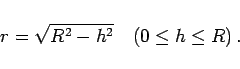

Inhalt Index DeskTop Bronstein

 Geometrie Sphärische Trigonometrie Grundbegriffe der Geometrie auf der Kugel Kurven, Bogen und Winkel auf der Kugel
Geometrie Sphärische Trigonometrie Grundbegriffe der Geometrie auf der Kugel Kurven, Bogen und Winkel auf der Kugel


Kurven auf der Kugeloberfläche heißen sphärische Kurven. Wichtige sphärische Kurven sind Großkreise oder Orthodromen und Kleinkreise. Sie entstehen als Schnittkreis einer durch eine Kugel verlaufenden Ebene, Schnittebene genannt:
Wird eine Kugel mit dem Radius R von einer Ebene K geschnitten, die vom Kugelmittelpunkt 0 den Abstand h hat, dann gilt für den Radius r des Schnittkreises
|  | (3.178) |
Für h =0 verläuft die Schnittebene durch den Kugelmittelpunkt, und r nimmt den größten Wert an. Der so entstehende Schnittkreis g in der Ebene  heißt Großkreis. Jeder andere Schnittkreis, für den dann 0<h<R gilt, wird Kleinkreis genannt, z.B. der Kreis k. Für h = R berührt die Ebene K die Kugel in einem Punkt. Sie wird zu einer sogenannten Tangentialebene.
heißt Großkreis. Jeder andere Schnittkreis, für den dann 0<h<R gilt, wird Kleinkreis genannt, z.B. der Kreis k. Für h = R berührt die Ebene K die Kugel in einem Punkt. Sie wird zu einer sogenannten Tangentialebene.
| Beispiel |
|
Auf der Erdkugel stellen der Äquator und die Meridiane mit ihren Gegenmeridianen - das sind ihre Spiegelungen an der Erdachse - Großkreise dar. Die Breitenkreise sind Kleinkreise (s. auch geographische Koordinaten). |